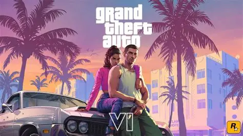
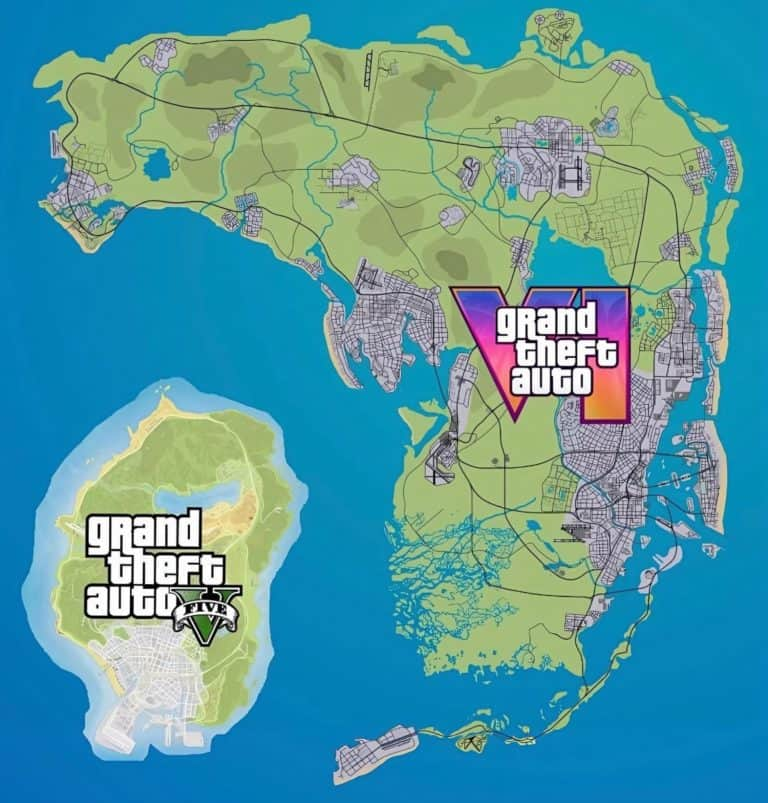

GTA 6
GTA 6 é o novo jogo da famosa série Grand Theft Auto, desenvolvido pela Rockstar Games. O jogo se passa em Vice City, uma cidade inspirada em Miami, e acompanha a história de Lucia e Jason. Os jogadores poderão explorar um grande mundo aberto, realizar missões, dirigir diversos veículos e viver muitas aventuras. O jogo promete gráficos mais realistas, novas funcionalidades e uma experiência ainda mais imersiva para os fãs da série.


Diferenças entre o mapa do GTA 5 e o GTA 6
Uma das principais diferenças entre os mapas de GTA V e GTA 6 é o tamanho e o nível de detalhes. Em GTA V, o mapa é composto principalmente pela cidade de Los Santos e algumas áreas rurais ao redor. Já em GTA 6, o mapa será ambientado no estado fictício de Leonida, que inclui Vice City e outras regiões, oferecendo mais locais para explorar.
Além de ser maior, o mapa de GTA 6 promete ser mais vivo e realista, com mais pessoas, veículos, estabelecimentos e eventos acontecendo ao mesmo tempo. A Rockstar também pretende criar ambientes mais detalhados, tornando a experiência de exploração mais imersiva do que em GTA V. Essas melhorias fazem de GTA 6 um dos jogos mais aguardados pelos fãs da série.
Locais do Mapa
- Vice City
- Praias
- Centro da Cidade
- Áreas Rurais
- Rodovias e Pontes
Curiosidades
- GTA 6 é um dos jogos mais aguardados da história.
- Vice City é inspirada na cidade de Miami.
- O primeiro trailer bateu recordes de visualizações.
- GTA 6 está sendo desenvolvido pela Rockstar Games.